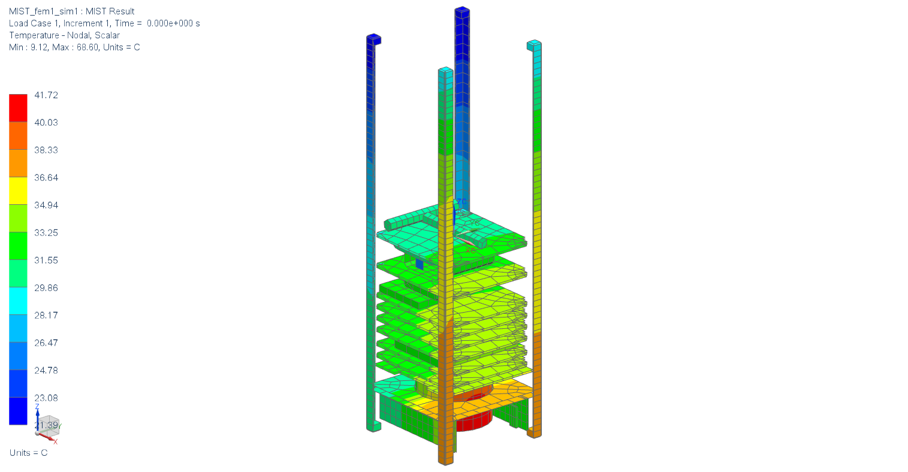

Thermal engineering
MIST satellite.
Thermal modelling and subsystem requirements within a student satellite team.

01 / OVERVIEW
Project overview
MIST, the MIniature Student Satellite, is a multidisciplinary spacecraft project at KTH. My work focused on thermal simulations and thermal-control requirements: understanding how heat moves through the satellite and how its components respond to the space environment.
02 / MY CONTRIBUTION
My contribution
- Performed thermal simulations using SYSTEMA and THERMICA.
- Collaborated with the team on thermal-control subsystem requirements.
03 / THE WORKFLOW
Thermal analysis workflow
- Model the spacecraft
Represent the geometry, materials and thermal properties of the structure and internal components.
- Define heat paths and conditions
Combine thermal couplings and component heat dissipation with the orbit and spacecraft orientation.
- Run and review the analysis
Examine temperature maps and time histories to inform thermal-control decisions and model updates.
04 / RESULTS
Model views and results
The model views and temperature maps illustrate the relationship between spacecraft geometry, internal components and heat-transfer paths. They provide a way to examine temperature distributions and support discussions about thermal-control choices within the wider satellite team.
05 / PROJECT GALLERY
Thermal model and simulation views
Select an image to view it at a larger size.
PROJECT CONTEXT
The images are project simulation material, rather than measured in-orbit temperatures. This overview describes my thermal-analysis role and the broader team workflow; the model and mission were developed collaboratively.
AUTHORSHIP & SOURCE
Team project: KTH MIST. Personal role and activities are documented in my CV. The workflow overview draws on Thermal control of MIST: A User-Friendly guide to Thermica and the thermal control of the MIST-spacecraft, by Jacob Ask Olsson (2 December 2016). This earlier guide is a project reference, not a report authored by me. Model views and temperature maps were supplied as MIST project material.